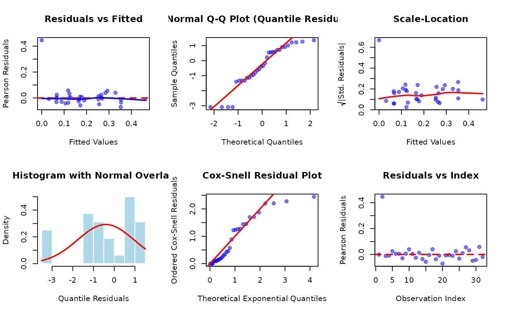

Extract Residuals from a Generalized Kumaraswamy Regression Model
Source:R/gkwreg-residuals.R
residuals.gkwreg.RdExtracts or calculates various types of residuals from a fitted Generalized
Kumaraswamy (GKw) regression model object of class "gkwreg", useful for
model diagnostics.
Arguments
- object
An object of class
"gkwreg", typically the result of a call togkwreg.- type
Character string specifying the type of residuals to compute. Available options are:
"response": (Default) Raw response residuals: \(y - \mu\), where \(\mu\) is the fitted mean."pearson": Pearson residuals: \((y - \mu) / \sqrt{V(\mu)}\), where \(V(\mu)\) is the variance function of the specified family."deviance": Deviance residuals: Signed square root of the unit deviances. Sum of squares equals the total deviance."quantile": Randomized quantile residuals (Dunn & Smyth, 1996). Transformed via the model's CDF and the standard normal quantile function. Should approximate a standard normal distribution if the model is correct."modified.deviance": (Not typically implemented, placeholder) Standardized deviance residuals, potentially adjusted for leverage."cox-snell": Cox-Snell residuals: \(-\log(1 - F(y))\), where \(F(y)\) is the model's CDF. Should approximate a standard exponential distribution if the model is correct."score": (Not typically implemented, placeholder) Score residuals, related to the derivative of the log-likelihood."partial": Partial residuals for a specific predictor in one parameter's linear model: \(eta_p + \beta_{pk} x_{ik}\), where \(eta_p\) is the partial linear predictor and \(\beta_{pk} x_{ik}\) is the component associated with the k-th covariate for the i-th observation. Requiresparameterandcovariate_idx.
- covariate_idx
Integer. Only used if
type = "partial". Specifies the index (column number in the corresponding model matrix) of the covariate for which to compute partial residuals.- parameter
Character string. Only used if
type = "partial". Specifies the distribution parameter ("alpha","beta","gamma","delta", or"lambda") whose linear predictor contains the covariate of interest.- family
Character string specifying the distribution family assumptions to use when calculating residuals (especially for types involving variance, deviance, CDF, etc.). If
NULL(default), the family stored within the fittedobjectis used. Specifying a different family may be useful for diagnostic comparisons. Available options match those ingkwreg:"gkw", "bkw", "kkw", "ekw", "mc", "kw", "beta".- ...
Additional arguments, currently ignored by this method.
Value
A numeric vector containing the requested type of residuals. The length corresponds to the number of observations used in the model fit.
Details
This function calculates various types of residuals useful for diagnosing the adequacy of a fitted GKw regression model.
Response residuals (
type="response") are the simplest, showing raw differences between observed and fitted mean values.Pearson residuals (
type="pearson") account for the mean-variance relationship specified by the model family. Constant variance when plotted against fitted values suggests the variance function is appropriate.Deviance residuals (
type="deviance") are related to the log-likelihood contribution of each observation. Their sum of squares equals the total model deviance. They often have more symmetric distributions than Pearson residuals.Quantile residuals (
type="quantile") are particularly useful for non-standard distributions as they should always be approximately standard normal if the assumed distribution and model structure are correct. Deviations from normality in a QQ-plot indicate model misspecification.Cox-Snell residuals (
type="cox-snell") provide another check of the overall distributional fit. A plot of the sorted residuals against theoretical exponential quantiles should approximate a straight line through the origin with slope 1.Partial residuals (
type="partial") help visualize the marginal relationship between a specific predictor and the response on the scale of the linear predictor for a chosen parameter, adjusted for other predictors.
Calculations involving the distribution's properties (variance, CDF, PDF) depend
heavily on the specified family. The function relies on internal helper
functions (potentially implemented in C++ for efficiency) to compute these based
on the fitted parameters for each observation.
References
Dunn, P. K., & Smyth, G. K. (1996). Randomized Quantile Residuals. Journal of Computational and Graphical Statistics, 5(3), 236-244.
Cox, D. R., & Snell, E. J. (1968). A General Definition of Residuals. Journal of the Royal Statistical Society, Series B (Methodological), 30(2), 248-275.
McCullagh, P., & Nelder, J. A. (1989). Generalized Linear Models (2nd ed.). Chapman and Hall/CRC.
Examples
# \donttest{
require(gkwreg)
require(gkwdist)
# Example 1: Comprehensive residual analysis for FoodExpenditure
data(FoodExpenditure)
FoodExpenditure$prop <- FoodExpenditure$food / FoodExpenditure$income
fit_kw <- gkwreg(
prop ~ income + persons | income + persons,
data = FoodExpenditure,
family = "kw"
)
# Extract different types of residuals
res_response <- residuals(fit_kw, type = "response")
res_pearson <- residuals(fit_kw, type = "pearson")
res_deviance <- residuals(fit_kw, type = "deviance")
res_quantile <- residuals(fit_kw, type = "quantile")
res_coxsnell <- residuals(fit_kw, type = "cox-snell")
# Summary statistics
residual_summary <- data.frame(
Type = c("Response", "Pearson", "Deviance", "Quantile", "Cox-Snell"),
Mean = c(
mean(res_response), mean(res_pearson),
mean(res_deviance), mean(res_quantile),
mean(res_coxsnell)
),
SD = c(
sd(res_response), sd(res_pearson),
sd(res_deviance), sd(res_quantile),
sd(res_coxsnell)
),
Min = c(
min(res_response), min(res_pearson),
min(res_deviance), min(res_quantile),
min(res_coxsnell)
),
Max = c(
max(res_response), max(res_pearson),
max(res_deviance), max(res_quantile),
max(res_coxsnell)
)
)
print(residual_summary)
#> Type Mean SD Min Max
#> 1 Response 0.0001978698 0.07082919 -0.173565885 0.1546289
#> 2 Pearson -0.0026560286 2.43575851 -6.277671255 5.7524532
#> 3 Deviance 0.2017937920 1.71709988 -2.169734396 2.1909681
#> 4 Quantile -0.0052189130 1.02816180 -2.448661750 2.5380310
#> 5 Cox-Snell 0.9964306145 0.97984715 0.007195225 5.1896594
# Example 2: Diagnostic plots for model assessment
data(GasolineYield)
fit_ekw <- gkwreg(
yield ~ batch + temp | temp | batch,
data = GasolineYield,
family = "ekw"
)
# Set up plotting grid
par(mfrow = c(2, 3))
# Plot 1: Residuals vs Fitted
fitted_vals <- fitted(fit_ekw)
res_pears <- residuals(fit_ekw, type = "pearson")
plot(fitted_vals, res_pears,
xlab = "Fitted Values", ylab = "Pearson Residuals",
main = "Residuals vs Fitted",
pch = 19, col = rgb(0, 0, 1, 0.5)
)
abline(h = 0, col = "red", lwd = 2, lty = 2)
lines(lowess(fitted_vals, res_pears), col = "blue", lwd = 2)
# Plot 2: Normal QQ-plot (Quantile Residuals)
res_quant <- residuals(fit_ekw, type = "quantile")
qqnorm(res_quant,
main = "Normal Q-Q Plot (Quantile Residuals)",
pch = 19, col = rgb(0, 0, 1, 0.5)
)
qqline(res_quant, col = "red", lwd = 2)
# Plot 3: Scale-Location (sqrt of standardized residuals)
plot(fitted_vals, sqrt(abs(res_pears)),
xlab = "Fitted Values", ylab = expression(sqrt("|Std. Residuals|")),
main = "Scale-Location",
pch = 19, col = rgb(0, 0, 1, 0.5)
)
lines(lowess(fitted_vals, sqrt(abs(res_pears))), col = "red", lwd = 2)
# Plot 4: Histogram of Quantile Residuals
hist(res_quant,
breaks = 15, probability = TRUE,
xlab = "Quantile Residuals",
main = "Histogram with Normal Overlay",
col = "lightblue", border = "white"
)
curve(dnorm(x, mean(res_quant), sd(res_quant)),
add = TRUE, col = "red", lwd = 2
)
# Plot 5: Cox-Snell Residual Plot
res_cs <- residuals(fit_ekw, type = "cox-snell")
plot(qexp(ppoints(length(res_cs))), sort(res_cs),
xlab = "Theoretical Exponential Quantiles",
ylab = "Ordered Cox-Snell Residuals",
main = "Cox-Snell Residual Plot",
pch = 19, col = rgb(0, 0, 1, 0.5)
)
abline(0, 1, col = "red", lwd = 2)
# Plot 6: Residuals vs Index
plot(seq_along(res_pears), res_pears,
xlab = "Observation Index", ylab = "Pearson Residuals",
main = "Residuals vs Index",
pch = 19, col = rgb(0, 0, 1, 0.5)
)
abline(h = 0, col = "red", lwd = 2, lty = 2)

par(mfrow = c(1, 1))
# Example 3: Partial residual plots for covariate effects
data(ReadingSkills)
fit_interact <- gkwreg(
accuracy ~ dyslexia * iq | dyslexia + iq,
data = ReadingSkills,
family = "kw"
)
# Partial residuals for IQ effect on alpha parameter
X_alpha <- fit_interact$model_matrices$alpha
iq_col_alpha <- which(colnames(X_alpha) == "iq")
if (length(iq_col_alpha) > 0) {
res_partial_alpha <- residuals(fit_interact,
type = "partial",
parameter = "alpha",
covariate_idx = iq_col_alpha
)
par(mfrow = c(1, 2))
# Partial residual plot for alpha
plot(ReadingSkills$iq, res_partial_alpha,
xlab = "IQ (z-scores)",
ylab = "Partial Residual (alpha)",
main = "Effect of IQ on Mean (alpha)",
pch = 19, col = ReadingSkills$dyslexia
)
lines(lowess(ReadingSkills$iq, res_partial_alpha),
col = "blue", lwd = 2
)
legend("topleft",
legend = c("Control", "Dyslexic"),
col = c("black", "red"), pch = 19
)
# Partial residuals for IQ effect on beta parameter
X_beta <- fit_interact$model_matrices$beta
iq_col_beta <- which(colnames(X_beta) == "iq")
if (length(iq_col_beta) > 0) {
res_partial_beta <- residuals(fit_interact,
type = "partial",
parameter = "beta",
covariate_idx = iq_col_beta
)
plot(ReadingSkills$iq, res_partial_beta,
xlab = "IQ (z-scores)",
ylab = "Partial Residual (beta)",
main = "Effect of IQ on Precision (beta)",
pch = 19, col = ReadingSkills$dyslexia
)
lines(lowess(ReadingSkills$iq, res_partial_beta),
col = "blue", lwd = 2
)
}
par(mfrow = c(1, 1))
}
# Example 4: Comparing residuals across different families
data(StressAnxiety)
fit_kw_stress <- gkwreg(
anxiety ~ stress | stress,
data = StressAnxiety,
family = "kw"
)
# Quantile residuals under different family assumptions
res_quant_kw <- residuals(fit_kw_stress, type = "quantile", family = "kw")
res_quant_beta <- residuals(fit_kw_stress, type = "quantile", family = "beta")
#> Using different family (beta) than what was used to fit the model (kw).
#> Using different family (beta) than what was used to fit the model (kw). Recalculating fitted values...
# Compare normality
par(mfrow = c(1, 2))
qqnorm(res_quant_kw,
main = "QQ-Plot: Kumaraswamy Residuals",
pch = 19, col = rgb(0, 0, 1, 0.5)
)
qqline(res_quant_kw, col = "red", lwd = 2)
qqnorm(res_quant_beta,
main = "QQ-Plot: Beta Residuals",
pch = 19, col = rgb(0, 0.5, 0, 0.5)
)
qqline(res_quant_beta, col = "red", lwd = 2)
par(mfrow = c(1, 1))
# Formal normality tests
shapiro_kw <- shapiro.test(res_quant_kw)
shapiro_beta <- shapiro.test(res_quant_beta)
cat("\nShapiro-Wilk Test Results:\n")
#>
#> Shapiro-Wilk Test Results:
cat(
"Kumaraswamy: W =", round(shapiro_kw$statistic, 4),
", p-value =", round(shapiro_kw$p.value, 4), "\n"
)
#> Kumaraswamy: W = 0.9638 , p-value = 3e-04
cat(
"Beta: W =", round(shapiro_beta$statistic, 4),
", p-value =", round(shapiro_beta$p.value, 4), "\n"
)
#> Beta: W = 0.811 , p-value = 0
# Example 5: Outlier detection using standardized residuals
data(MockJurors)
fit_mc <- gkwreg(
confidence ~ verdict * conflict | verdict + conflict,
data = MockJurors,
family = "mc"
)
res_dev <- residuals(fit_mc, type = "deviance")
res_quant <- residuals(fit_mc, type = "quantile")
# Identify potential outliers (|z| > 2.5)
outlier_idx <- which(abs(res_quant) > 2.5)
if (length(outlier_idx) > 0) {
cat("\nPotential outliers detected at indices:", outlier_idx, "\n")
# Display outlier information
outlier_data <- data.frame(
Index = outlier_idx,
Confidence = MockJurors$confidence[outlier_idx],
Verdict = MockJurors$verdict[outlier_idx],
Conflict = MockJurors$conflict[outlier_idx],
Quantile_Residual = round(res_quant[outlier_idx], 3),
Deviance_Residual = round(res_dev[outlier_idx], 3)
)
print(outlier_data)
# Influence plot
plot(seq_along(res_quant), res_quant,
xlab = "Observation Index",
ylab = "Quantile Residual",
main = "Outlier Detection: Mock Jurors",
pch = 19, col = rgb(0, 0, 1, 0.5)
)
points(outlier_idx, res_quant[outlier_idx],
col = "red", pch = 19, cex = 1.5
)
abline(
h = c(-2.5, 0, 2.5), col = c("orange", "black", "orange"),
lty = c(2, 1, 2), lwd = 2
)
legend("topright",
legend = c("Normal", "Outlier", "±2.5 SD"),
col = c(rgb(0, 0, 1, 0.5), "red", "orange"),
pch = c(19, 19, NA),
lty = c(NA, NA, 2),
lwd = c(NA, NA, 2)
)
} else {
cat("\nNo extreme outliers detected (|z| > 2.5)\n")
}
#>
#> Potential outliers detected at indices: 21 23 39 44 54
#> Index Confidence Verdict Conflict Quantile_Residual Deviance_Residual
#> 1 21 0.995 two-option yes 2.609 0.588
#> 2 23 0.995 two-option yes 2.609 0.588
#> 3 39 0.005 three-option yes -3.052 141421.356
#> 4 44 0.005 three-option yes -3.052 141421.356
#> 5 54 0.995 two-option no 2.641 0.288
# }